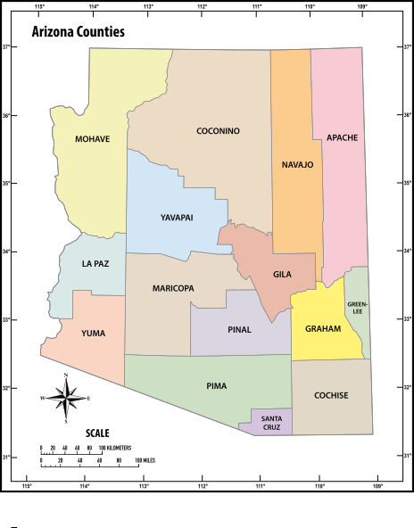
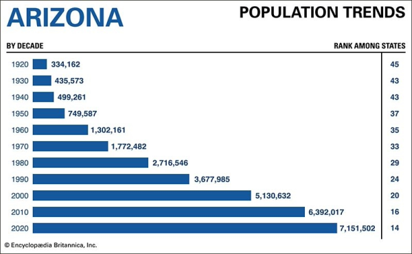

D1 · Story Frame
Arizona is a sprawling state filled with all walks of life. Arizona's population is on the rise, and this is in large part thanks to the global Covid19 pandemic. Lower housing prices paired with the incredible landscape and culture that Arizona provides, creates the perfect destination for families and individuals alike to settle down. Let's take a look at Arizona's census numbers as well as other, more recent population counts.
D2 · Editorial Figures


D3 · Accessible Data Table
| Arizona County | Total Population 2010 in millions |
Total Population 2020 in millions |
Population as of July 1, 2024 in millions |
|---|---|---|---|
| Maricopa | 3.8 | 4.4 | 4.73 |
| Pima | 0.98 | 1.0 | 1.09 |
| Pinal | 0.38 | 0.43 | 0.48 |
| Yavapai | 0.21 | 0.24 | 0.25 |
| Arizona Totals | 6.4 | 7.2 | 7.6 |
Data Provided by Arizona Office of Economic Opportunity.
*Not all counties are listed above so AZ total will appear larger than sum of counties listed in table.
D4 · Responsive SVG
D5-D6 · System and Documentation
Extend Module 1 patterns, then link your sources, asset credits/licenses, test record, transformation notes, and AI disclosure.